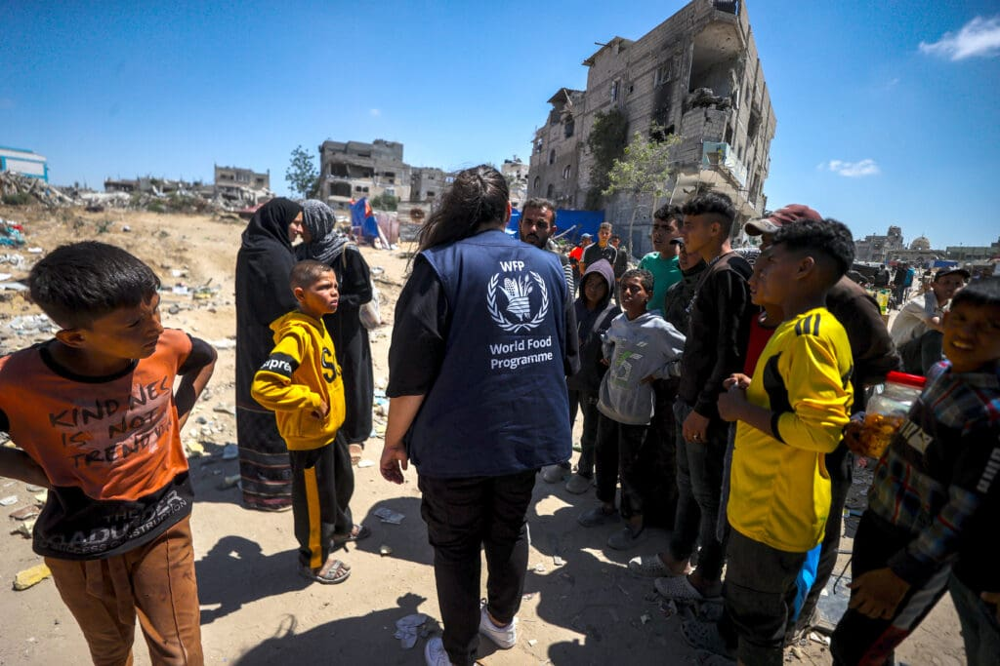

flowchart TD
classDef primary fill:#e1f5fe,stroke:#0288d1,stroke-width:2px
classDef secondary fill:#f0f4f8,stroke:#4682b4,stroke-width:1px
classDef highlight fill:#fce4ec,stroke:#d81b60,stroke-width:2px
title[("Security Incident Analysis<br>Research Questions")]
title --> A & B & C & D
A["What types of attacks are<br>most common globally vs. regionally?"]:::primary
A --> A1["Frequency by attack method"]:::secondary
A --> A2["Geographic distribution<br>of attack types"]:::secondary
B["How does violence vary by<br>year and political event?"]:::primary
B --> B1["Temporal patterns<br>and hotspots"]:::secondary
B --> B2["Correlation with<br>political upheaval"]:::secondary
B --> B3["Emerging threats"]:::secondary
C["How does risk differ for national<br>vs. international staff?"]:::primary
C --> C1["Casualty comparison<br>by nationality"]:::secondary
C --> C2["Risk factors across regions"]:::secondary
D["What contextual factors shape<br>security patterns?"]:::primary
D --> D1["Conflict dynamics"]:::secondary
D --> D3["Armed actor motivations"]:::secondary
Humanitarian Aid Under Fire
Analyzing Global Patterns of Violence Against Aid Workers

Introduction: The Rising Threats to Humanitarian Workers
Around the world, humanitarian aid workers risk their lives to assist communities affected by conflict, disaster, and crisis. But what happens when aid itself becomes a target?
This research explores global patterns of violence against humanitarian personnel using data from the Aid Worker Security Database (AWSD). By examining incident patterns across time, geography, and conflict contexts, we uncover both universal trends and context-specific threats that shape the security landscape for aid operations worldwide.
In particular, this analysis focuses on eight contemporary conflict hotspots—Afghanistan, Democratic Republic of Congo (DRC), Mali, Palestine, Somalia, South Sudan, Sudan, and Syria—that represent both the highest incident rates over the past 15 years and some of the most dangerous environments for humanitarian operations today.
Research Questions and Methodology
This research seeks to answer four fundamental questions about humanitarian security:
The methodology combines quantitative analysis of security incident data from the AWSD with contextual examination of conflict dynamics in each region. By triangulating incident metrics with political events, territorial control patterns, and armed actor behaviors, this research provides both broad global insights and nuanced regional understanding.
About the Dataset
This analysis utilizes the Aid Worker Security Database (AWSD), a global resource maintained by Humanitarian Outcomes that tracks major incidents of violence against humanitarian aid workers. Each record in the dataset includes:
- Temporal and geographic data: Incident date, location, coordinates
- Organizational details: Type of agency affected, staff nationality
- Incident specifics: Attack type, context, perpetrators, motives
- Impact metrics: Numbers killed, wounded, kidnapped
The AWSD is widely considered the gold standard for humanitarian security data and is used by researchers, policy makers, and security practitioners worldwide.
Global Patterns of Humanitarian Security Incidents
Worldwide Incident Trends (1997-2025)
Security incidents affecting humanitarian workers have shown a concerning upward trajectory over the past three decades. From isolated incidents in the 1990s, the global humanitarian community now faces hundreds of serious security incidents annually. Several inflection points stand out:
- 2003-2006: Sharp increase following international interventions in Iraq and Afghanistan
- 2011-2014: Surge during the Arab Spring and subsequent conflicts
- 2018-2020: Peak during intensified conflicts in Syria, Yemen, and the Sahel
- 2023-2025: Recent escalation in multiple conflict zones, including Gaza, Sudan, and DRC
These global patterns reflect both the changing nature of conflict and the evolving role of humanitarian actors in complex emergencies.
Geographic Distribution of Incidents
While security incidents affect humanitarian operations worldwide, they are not evenly distributed. The data reveals clear geographic concentrations:
- Middle East: 31% of all incidents, concentrated in Syria, Iraq, Yemen, and Palestine
- East Africa: 24% of incidents, primarily in Somalia, South Sudan, and Sudan
- Central/South Asia: 19% of incidents, dominated by Afghanistan and Pakistan
- Central Africa: 16% of incidents, mostly in DRC and CAR
- West Africa: 10% of incidents, increasingly focused in the Sahel region
This geographic distribution closely mirrors both protracted conflicts and areas where humanitarian operations maintain significant field presence despite security constraints.
Attack Methods: Global Analysis
Attack methods against humanitarian workers show significant variation globally, offering insights into perpetrator capabilities and motivations:
- Shooting incidents: 34% of all recorded events, the most common attack type worldwide
- Kidnapping: 28% of incidents, particularly prevalent in certain regions
- Aerial bombardment: 14% of incidents, exclusively in areas with state actor involvement
- Vehicle-based attacks: 10% of incidents, including ambushes and IEDs
- Physical assault: 8% of incidents, often in contexts of civil unrest
- Explosive weapons: 6% of incidents, including landmines and suicide bombings
These global patterns mask important regional variations that become evident when examining specific conflict contexts.
Staff Nationality and Casualty Patterns
Perhaps the most striking finding from the global data is the consistent disparity in security incidents affecting national versus international staff:
- National staff account for approximately 87% of all casualties (killed, wounded, and kidnapped)
- International staff face significantly lower casualty rates despite often receiving more robust security measures
- This disparity persists across all geographic regions and conflict types
- In many contexts, national staff are deliberately targeted due to their organizational affiliation
This global pattern represents both an operational challenge and an ethical concern for humanitarian organizations attempting to manage risk equitably.
Regional Focus: Eight Contemporary Hotspots
Why These Eight Countries?
The eight countries selected for detailed analysis—Afghanistan, DRC, Mali, Palestine, Somalia, South Sudan, Sudan, and Syria—represent both historical and contemporary hotspots for humanitarian security incidents. Together, they account for approximately 68% of all incidents recorded in the AWSD over the past 15 years. Each context also offers unique insights into how different conflict dynamics shape security threats.
Comparative Analysis of Attack Methods
Attack methods vary significantly across these eight conflict zones, reflecting differences in conflict dynamics, armed actor capabilities, and tactical objectives:
State vs. Non-State Actor Patterns
- Syria and Palestine: Aerial bombardment and shelling dominate, reflecting state military capabilities and urban warfare
- Sudan, South Sudan, Somalia: Shooting predominates, indicating organized ground operations by militarized forces
- Afghanistan, DRC, Mali: Kidnapping emerges as the primary attack method, suggesting resource extraction and leverage-seeking motivations
Regional Attack Method Comparison
| Region | Primary Attack Method | Secondary Method | Notable Characteristic |
|---|---|---|---|
| Afghanistan | Kidnapping | Shooting | Tactical shift over time from combat to abduction |
| DRC | Kidnapping | Shooting | Resource-focused targeting |
| Mali | Kidnapping | Shooting | Focused on road networks |
| Palestine | Aerial bombardment | Shooting | Collateral impact from military operations |
| Somalia | Shooting | Kidnapping | Military-style targeting |
| South Sudan | Shooting | Bodily assault | Organized armed group operations |
| Sudan | Shooting | Kidnapping | Ambush-focused road attacks |
| Syria | Aerial bombardment | Shelling | State military operations |
This distribution demonstrates how humanitarian security threats are shaped by the unique characteristics of each conflict, requiring tailored mitigation strategies rather than standardized approaches.
Attack Contexts Across Regions
The contextual settings of security incidents reveal important patterns about how and where humanitarian workers face the greatest risks:
Combat vs. Targeted Attacks
- Syria, Palestine: Combat/crossfire dominates (60-70% of incidents), indicating collateral damage rather than deliberate targeting
- Sudan, South Sudan, Somalia, DRC, Mali: Ambushes predominate (40-50% of incidents), showing deliberate targeting during movement
- Afghanistan: More diverse contexts including direct targeting, raids on compounds, and kidnappings
Implications for Operations
The prevalence of different attack contexts has direct implications for humanitarian operations:
- In ambush-dominated environments (Sudan, DRC, Mali): Journey management, route analysis, and convoy protection are critical
- In combat/crossfire contexts (Syria, Palestine): Early warning systems, bunkers, and conflict mapping become essential
- In compound targeting scenarios (Afghanistan): Physical site security and access control are priorities
These distinctions highlight the importance of adapting operational security plans to address the most likely contexts of attack in each environment.
Geographic Risk Patterns
Security incident data reveals distinct geographic vulnerability patterns across the eight focus countries:
Movement vs. Fixed-Site Risks
- Sudan, South Sudan, Somalia, DRC, Mali: Road networks and transportation routes represent 60-80% of high-risk locations
- Afghanistan, Syria: Fixed facilities (compounds, offices, project sites) feature prominently in major incidents
- Palestine: Broader geographic spread tied to military operations with less predictable patterns
Implications for Risk Management
These geographic patterns suggest that risk management should prioritize:
- Road security protocols in Africa’s conflict zones
- Compound hardening in Afghanistan and parts of Syria
- Dispersed protection measures in Palestine
The concentration of incidents in particular locations also enables more targeted security investments in high-risk zones.
Casualty Distribution and Protection Inequality
A striking finding across all eight conflict zones is the consistent disparity in casualties between national and international humanitarian personnel:
National vs. International Staff Risk
- Every region shows national staff facing 5-10 times higher casualty rates
- South Sudan, Sudan, Syria: Show the most extreme disparities with nationals suffering over ten times more casualties
- Afghanistan: While still unequal, shows slightly more balanced distribution of risk
Type of Casualties by Region
- Afghanistan, Sudan, Somalia, South Sudan: High fatality rates for nationals
- DRC, Mali: Higher kidnapping rates compared to fatalities
- Palestine, Syria: Injuries from indirect fire predominate over targeted violence
This universal pattern of national staff bearing disproportionate security risks represents both an operational vulnerability and an ethical challenge for humanitarian organizations.
Temporal Patterns and Political Transitions
The relationship between political events and security incidents reveals complex patterns across conflict zones:
Governance Changes and Security Implications
- South Sudan: Counter-intuitively shows highest incident levels after peace agreements
- Sudan: Spikes following coups and regime changes (Bashir’s overthrow, 2021 coup)
- Afghanistan: Decreased incidents after Taliban takeover, contrary to expectations
- Syria: Surges during territorial shifts (ISIS expansion) and regime collapse
- Palestine: Dramatic spike after October 2023 Hamas attack
Misinterpreted Security Improvements
In several regions, apparent security improvements mask deteriorating conditions:
- Mali, South Sudan: Recent decline in incidents likely reflects reduced humanitarian presence rather than improved conditions
- Afghanistan: Post-Taliban decline may indicate both consolidation of control and reduced reporting
This highlights the importance of interpreting security metrics within their proper political context rather than at face value.
Armed Actor Motivations and Targeting Patterns
Different armed actors demonstrate distinct motivational patterns that shape their targeting of humanitarian operations:
Motivation Typology
- Resource extraction: In DRC and Mali, armed groups prioritize kidnapping for ransom
- Territorial control: Somalia’s Al-Shabaab and Afghanistan’s Taliban target humanitarian workers to demonstrate power
- Military objectives: In Syria and Palestine, most incidents result from broader military campaigns rather than specific targeting
- Ethnic targeting: In South Sudan and parts of Sudan, identity-based violence affects humanitarian workers of certain ethnicities
Implications for Acceptance Strategies
Understanding armed actor motivations helps shape effective acceptance strategies:
- Where economic motives predominate: Reducing visible resources and hardening physical security
- Where ideological opposition exists: Community-based acceptance strategies and remote programming
- Where collateral damage is the primary risk: Deconfliction mechanisms with military actors
Comparative Analysis and Cross-Cutting Themes
The detailed examination of these eight countries reveals several critical cross-cutting themes:
Conflict Type Shapes Security Threat Profiles
The fundamental nature of each conflict largely determines the security threat profile:
- State-actor dominated conflicts (Syria, Palestine): Characterized by aerial bombardment, shelling, and collateral impact
- Resource-competition conflicts (DRC, Mali): Feature high kidnapping rates tied to economic extraction
- Territorial control conflicts (Somalia, Afghanistan): Show patterns tied to armed group consolidation and expansion
- Political transition conflicts (Sudan, South Sudan): Experience volatility tied to governance changes
Geographic Vulnerability Varies by Conflict Type
The locations of greatest risk differ significantly by context:
- Road networks dominate in ambush-prone environments (Sudan, South Sudan, Somalia, DRC, Mali)
- Fixed facilities face higher risks in areas with direct targeting (Afghanistan) or aerial bombardment (Syria)
- Frontline proximity determines risk in active combat zones (Palestine, parts of Syria)
National Staff Protection Gap Is Universal
Every context shows a dramatic disparity in security outcomes for national versus international staff:
- Casualty rates: Nationals face 5-10 times higher casualty rates across all contexts
- Risk exposure: National staff typically operate in higher-risk environments with fewer protections
- Security investment: Organizations often allocate more resources to international staff security
Political Transitions Create Vulnerability Windows
Security incidents consistently spike during power transitions, though the specific relationship varies:
- Peace agreements sometimes correlate with increased incidents (South Sudan)
- Coups and regime changes usually lead to immediate security deterioration (Sudan, Mali)
- Territorial control shifts create new vulnerability patterns (Syria, Afghanistan)
Conclusions and Recommendations
Key Findings and Implications
- Context-specific security approaches are essential
- The substantial variation in attack methods, contexts, and locations across regions demonstrates that standardized security protocols will be insufficient
- Protection inequality requires urgent attention
- The universal pattern of national staff bearing 5-10 times higher casualty rates represents both an operational and ethical priority
- Political transitions create vulnerability
- Security incidents consistently spike during power transitions, though the specific relationship varies by context
- Security metrics require careful interpretation
- Reduced incidents may indicate humanitarian withdrawal rather than improved conditions
Recommendations for Humanitarian Organizations
Security Planning
- Develop region-specific protocols based on predominant attack methods and contexts
- Implement equity-based duty of care policies that provide equivalent protection for national and international staff
- Establish early warning systems tied to political transitions and conflict dynamics
Operational Approaches
- In ambush-prone regions (Sudan, South Sudan, Somalia, DRC, Mali): Prioritize journey management and convoy protection
- In aerial threat zones (Syria, Palestine): Focus on shelter designs and early warning systems
- In kidnap-risk areas (Afghanistan, DRC, Mali): Emphasize low-profile approaches and staff tracking
Policy Advocacy
- Support international accountability mechanisms for attacks on humanitarian workers
- Advocate for humanitarian corridors and deconfliction mechanisms in active conflict zones
- Promote sustained donor investment in context-appropriate security measures
Recommendations for Future Research
- Investigate the relationship between security incidents and humanitarian access constraints
- Analyze staff nationality disparities in security provision and incident outcomes
- Examine the effectiveness of different security approaches across comparable contexts
- Study the impact of climate-security interactions on humanitarian operations in conflict zones
By applying these context-specific insights, humanitarian organizations can develop more effective security risk management approaches that address the unique challenges of each operational environment while working toward more equitable protection for all humanitarian personnel.
📥 Source and Access
This dataset was downloaded directly from: 👉 Aid Worker Security Database (AWSD) (Outcomes, 2024).
Please cite as:
Humanitarian Outcomes. Aid Worker Security Database (AWSD). https://aidworkersecurity.org
References
Foreign Relations, C. on. (2024a). Al-shabab in somalia. https://www.cfr.org/global-conflict-tracker/conflict/al-shabab-somalia
Foreign Relations, C. on. (2024b). Civil war in south sudan. https://www.cfr.org/global-conflict-tracker/conflict/civil-war-south-sudan
Foreign Relations, C. on. (2024c). Conflict in syria. https://www.cfr.org/global-conflict-tracker/conflict/conflict-syria
Foreign Relations, C. on. (2024d). Israeli-palestinian conflict. https://www.cfr.org/global-conflict-tracker/conflict/israeli-palestinian-conflict
Foreign Relations, C. on. (2024e). Power struggle in sudan. https://www.cfr.org/global-conflict-tracker/conflict/power-struggle-sudan
Foreign Relations, C. on. (2024f). Violence in the democratic republic of congo. https://www.cfr.org/global-conflict-tracker/conflict/violence-democratic-republic-congo
Foreign Relations, C. on. (2024g). Violent extremism in the sahel. https://www.cfr.org/global-conflict-tracker/conflict/violent-extremism-sahel
Foreign Relations, C. on. (2024h). War in afghanistan. https://www.cfr.org/global-conflict-tracker/conflict/war-afghanistan
Outcomes, H. (2024). Aid worker security database. https://www.aidworkersecurity.org/